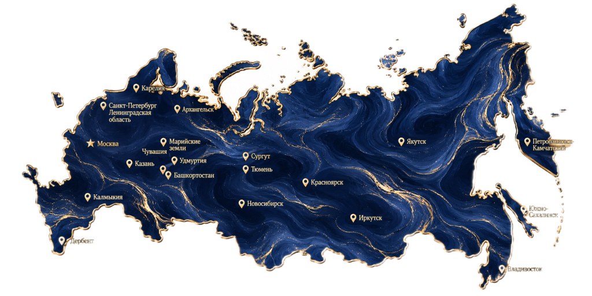
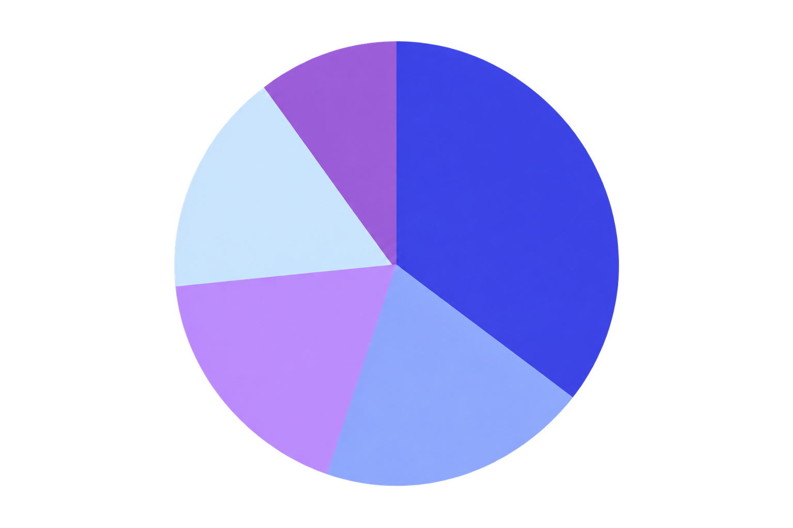
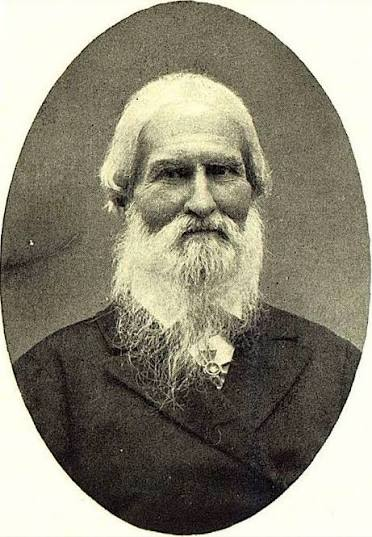

Первоисточник — народы России
Загружаем карту…
Интерактивная карта


Схема Старой Ладоги показывает примерное расположение мест. Общая карта — иллюстрация проекта.
Обработка запроса ИИ
Предполагаю родословную
Подбираю регионы и культуры
Предполагаемый регион рода
Санкт-Петербург и Ленинградская область

Возможно ваш предок · Демо
Пётр Елисеев
Основатель петербургской купеческой династии Елисеевых. Открыл лавку на Невском проспекте.
Посетить магазин купцов Елисеевых